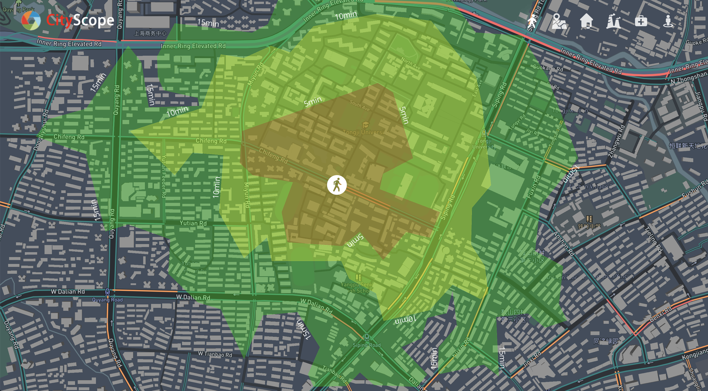
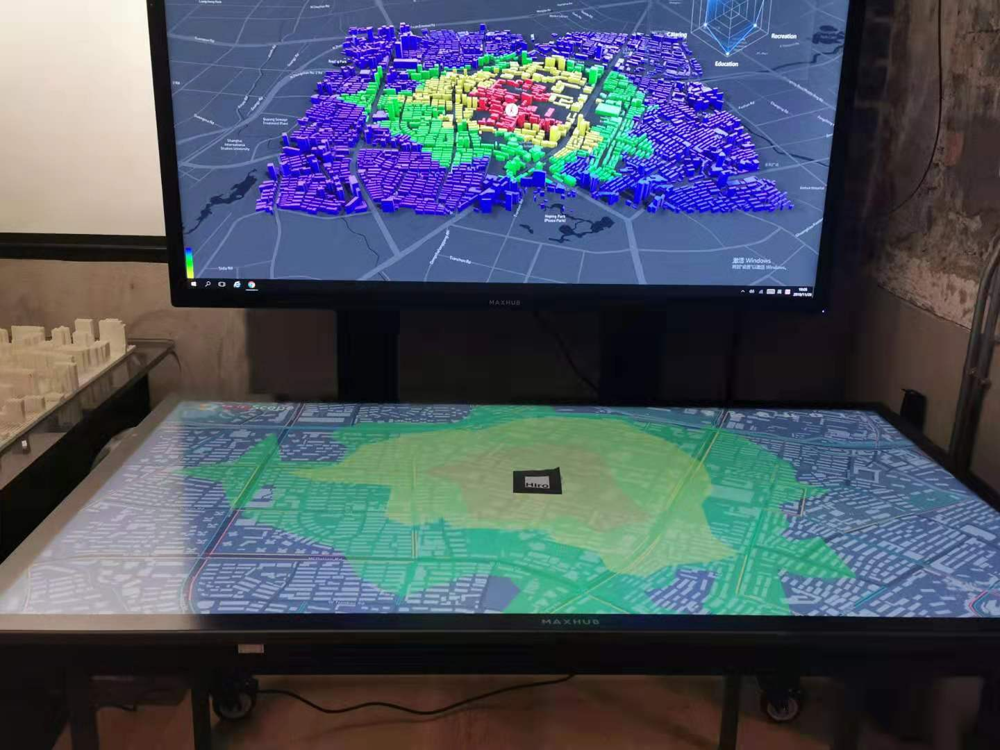

Interactive Urban Planning
2019-10
Background
This summer I joined Tongji-MIT City Science Lab @ Shanghai for a summer internship, I participated in the project “Future Life Prototyping on Chifeng Road” under the guidance of Professor Xiaohua Sun. We developed a interactive multi-screen system to support the design, data monitoring, and management of the community.
This project is highly inspired by CityScope, which is a concept for shared, interactive computation for urban planning, first developed by City Science researchers from MIT Media Lab.
During my internship, I mainly focused on 3 tasks:
- Designing: I designed community evaluation metrics related with transport, such as the travel isochronal circles, pedestrian comfort, road congestion, road health condition, traffic noises, etc.
- Data Collecting & Modelling: I crawled research data online and from social media to build corresponding evaluation models. I also built community’s 3D model by Mapbox.
- Developing: I developed a multiple-screen platform to control, monitor and interact with the community elements and assess the impact of planning.
Designing
I designed community evaluation metrics related with transport, such as the travel isochronal circles, pedestrian comfort, road congestion, road health condition, traffic noises, etc. I divided the indicators related with transport into several categories, and define the operation type on the Interaction Screen.

Data Collecting & Modelling
I collected multi-source data for building a evaluation model.
- Shanghai Taxi GPS data (public dataset)
- Shanghai Shapefile data (public dataset)
- Geo-tagged check-in data (crawled from Weibo)
- POIs data (crawled from Gaode Map)
- Traffic Flow Heatmap data (crawled from Gaode Map)
- Streetview data (request from Baidu API)
I used Postgres Database to store and manage geo-tagged data. The data contains about 641,140 POIs from Gaode Map and all the node data from OSM.
Then I developed some models to analyze the relation between elements and corresponding metrics. Such as calculating isochronal circles by POIs data to evaluate walking accessibility, designing cluster model by taxi trajecories data to evaluate congestion.
I also used Mapbox to display 3D model of Chifeng Road and nearby living area. Since the 3D map data provided by Mapbox is not available in Shanghai, I had to manually build the 3D building model by Shapefile with floor data and load it into Mapbox for rendering.
Developing
We designed 3 different types of screens to control, monitor and interact with the community.
- Interactive Screen: A large touch screen to interact with community elements.
- Monitor Screen: A wall-mounted screen to show related information.
- Explore Screen: An iPad Pro (or other mobile devices) to show AR scene linked with Interactive Screen.
I used Mapbox and AR.js to build the Explore Screen, which could explore the AR content connected with community.

I developed the multiple-screen platform by Javascript, so that all the screens can be transferred to other devices easily, which could make the exploration “portable”.
Future Works
- We want to add more evaluation metrics related with community design and management such as plant area, air quality and odour level.
- We are also planning to collect more data to refine our evaluation model.